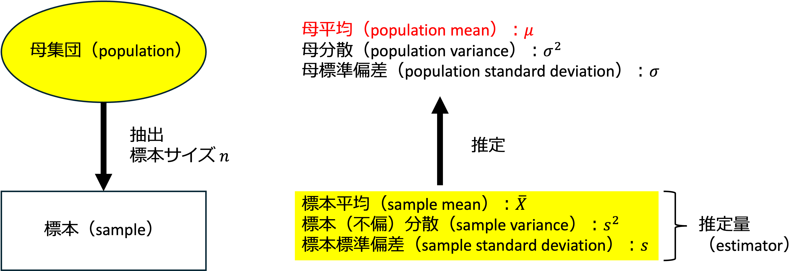
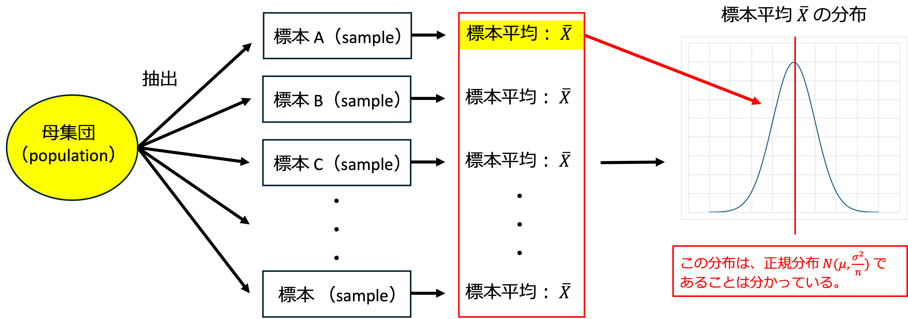
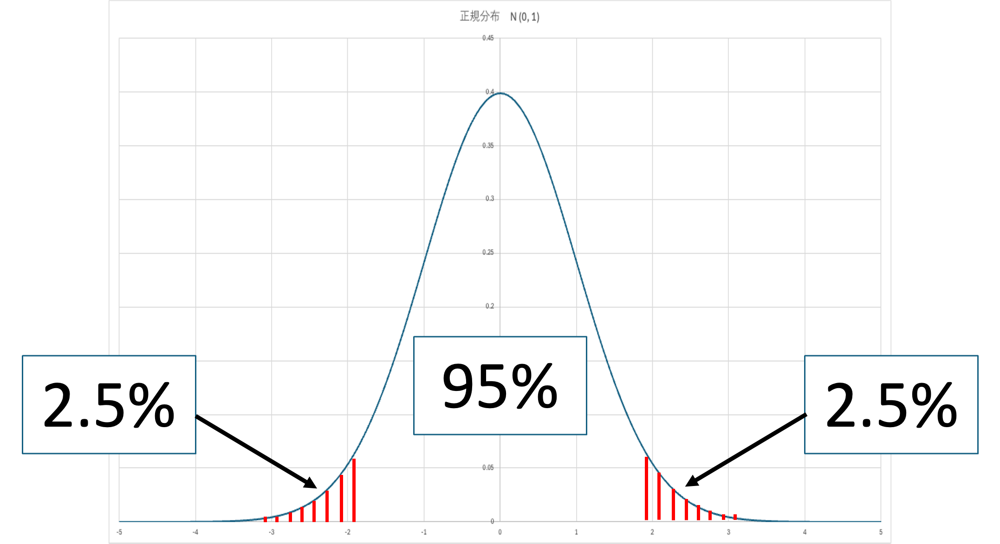
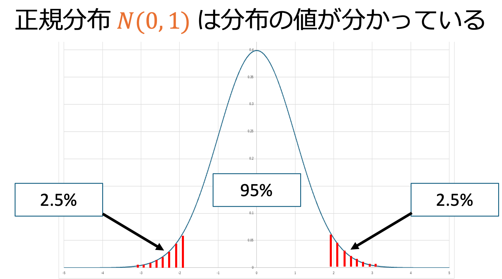
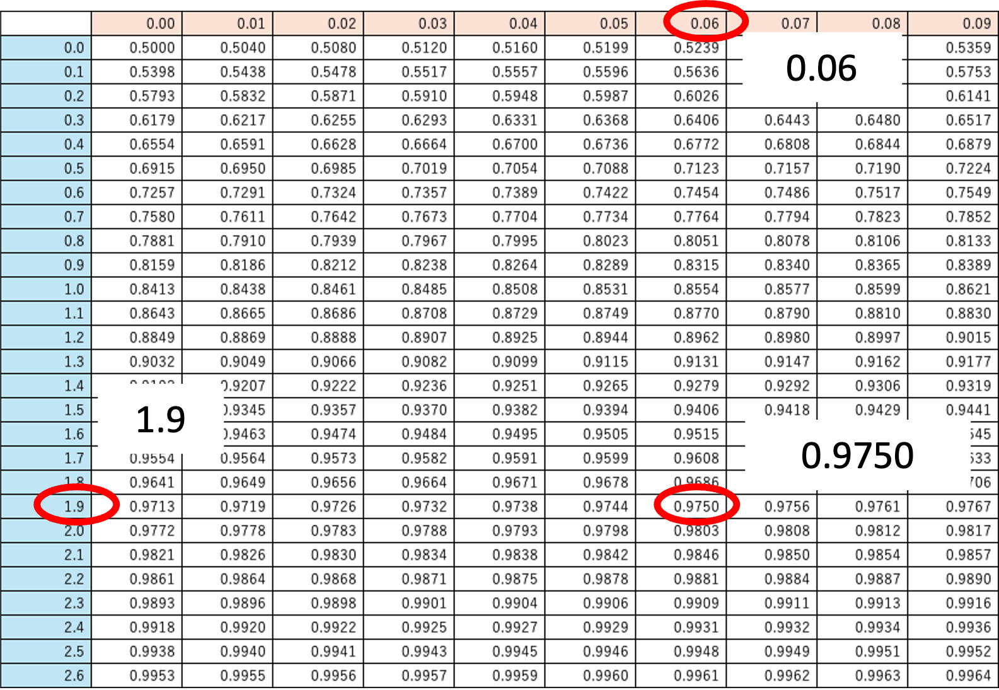
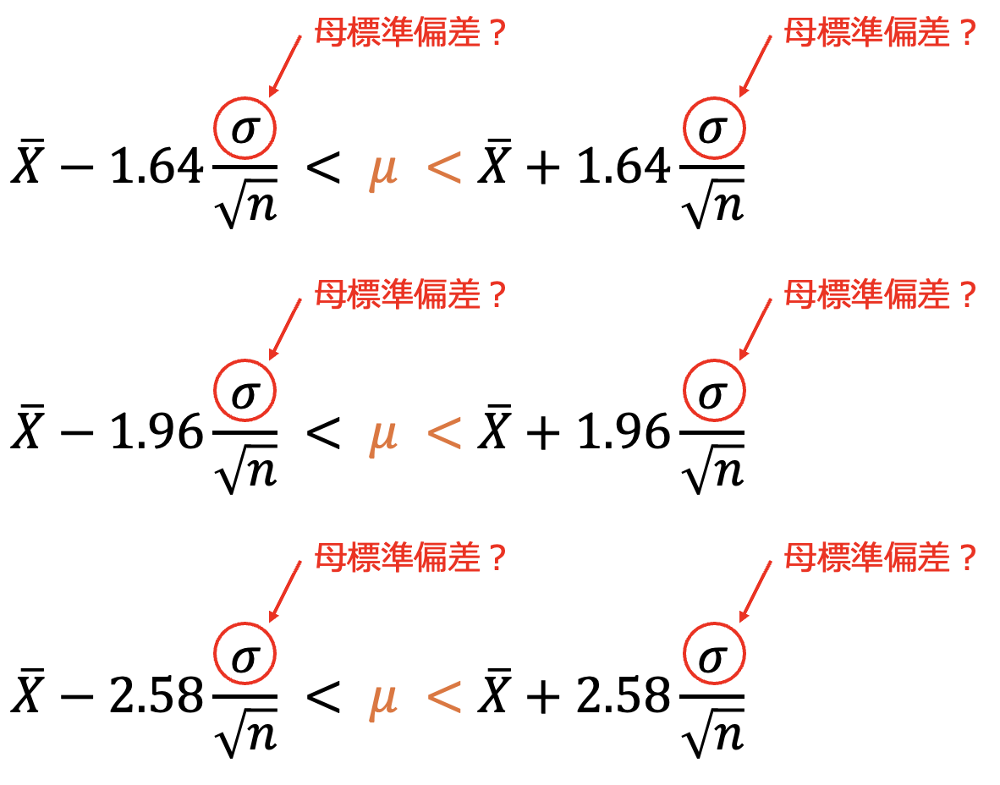
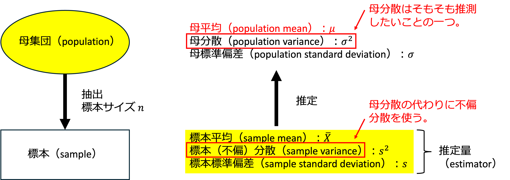
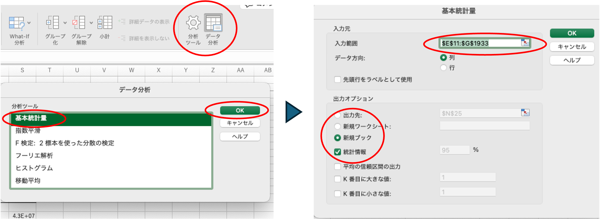

17 母平均の推定
母平均はどう推定するか？
・母平均の区間推定
・区間推定、母平均の信頼区間の導出、エクセルでの計算方法
17.1 推定とは
母集団の特徴（母平均など）を、限られた標本から推測することを「推定」と呼びます。
- 母集団 (Population): 知りたい対象の全体。
- 標本 (Sample): 実際に手元にあるデータ。
- 推定量 (Estimator): 推定に使う計算式（標本平均 \(\bar{X}\) など）。

17.2 母平均の推定
標本抽出と平均の推定を複数回行う場合を考えます。標本平均は一つの値ではなく、抽出された標本ごとに標本平均が存在します。
標本平均 \(\bar{X}\) の平均が母集団の平均 \(\mu\) となることは分かっています。
しかし、標本は一つしかないので、標本平均の平均を計算できません。
それでも、標本平均の分布は、正規分布 \(N\left(\mu, \dfrac{\sigma^2}{n}\right)\) に従うことは分かっています。
そこで、今回取得した一つの標本平均を元に、ある確率で母平均 \(\mu\) を含むような範囲を求めることを考えます。

17.3 信頼区間
「真の値がどれくらいの範囲に含まれるか」を確率的に示すのが信頼区間です。
95%信頼区間
母平均 \(\mu\) を標本平均から推定する際、95%の確率で母平均 \(\mu\) を含むような範囲のことをいいます。

Note「95%の信頼で \(\mu\) を含む」とは？
母平均 \(\mu\) は動かない（決まった）値で、標本を取るたびに変わるのは区間のほうです。「標本を取って区間を作ることを何度も繰り返すと、そのうち約95%の区間が母平均 \(\mu\) を含む」という意味です。
17.4 母平均の区間推定
標本平均 \(\bar{X}\) から、95%の確率で母平均 \(\mu\) を含む範囲を求めます。
標本平均 \(\bar{X}\) の分布は、（中心極限定理より）正規分布 \(N\left(\mu, \dfrac{\sigma^2}{n}\right)\) であることは分かっています。
標本平均 \(\bar{X}\) を標準化した値 \(\left(\dfrac{\bar{X} - \mu}{\frac{\sigma}{\sqrt{n}}}\right)\) は、正規分布 \(N(0, 1)\) に従います。
この \(\dfrac{\bar{X} - \mu}{\frac{\sigma}{\sqrt{n}}}\) が95%の確率で入る範囲は、次のように表せます。
\[ P\left\{{\color{#E36C09}{-1.96}} \leqq \frac{\bar{X} - {\color{#E36C09}{\mu}}}{\frac{\sigma}{\sqrt{n}}} \leqq {\color{#E36C09}{1.96}}\right\} = 0.95 \]
- この式を母平均 \(\mu\) について解くと、
\[ P\left\{\bar{X} - 1.96\frac{\sigma}{\sqrt{n}} \leqq {\color{#E36C09}{\mu}} \leqq \bar{X} + 1.96\frac{\sigma}{\sqrt{n}}\right\} = 0.95 \]
- つまり、\(\left[\bar{X} - 1.96\dfrac{\sigma}{\sqrt{n}},\ \ \bar{X} + 1.96\dfrac{\sigma}{\sqrt{n}}\right]\) は、95%の信頼（確率）で、母平均 \(\mu\) を含みます。
Noteなぜ \(\pm 1.96\) なのか？
- 標本平均を標準化 \(\left(\dfrac{\bar{X} - \mu}{\frac{\sigma}{\sqrt{n}}}\right)\) すると、平均 0、標準偏差 1 の正規分布 \(N(0, 1)\)（標準正規分布）に従います。
- 正規分布 \(N(0, 1)\) は、どの値までにどれだけの割合が含まれるかが分かっているので、標準正規分布表を用いて、95%の確率でこの値を含む範囲を求めることができます。

- 95%の範囲の外側は、左右に2.5%ずつあります。つまり、右側の境目より左には \(95\% + 2.5\% = 97.5\%\)（0.9750）が含まれます。
- 標準正規分布表で 0.9750 を探すと、行が「1.9」、列が「0.06」のところにあります。したがって、右側の境目は \(1.9 + 0.06 = 1.96\) です。
- 正規分布は左右対称なので、左側の境目は \(-1.96\) になります。

- よって、95%信頼区間の場合には、標準化した値が \(\pm 1.96\) 以内に入れば良いと分かります。
\[ P\left\{-1.96 \leqq \frac{\bar{X} - \mu}{\frac{\sigma}{\sqrt{n}}} \leqq 1.96\right\} = 0.95 \]
- エクセルでは、
=NORM.S.INV(0.975)と入力すると 1.959964… と表示され、表を使わなくても同じ値を求められます。
17.5 様々な信頼区間
- 90% 信頼区間
\[ \bar{X} - 1.64\frac{\sigma}{\sqrt{n}} < {\color{#E36C09}{\mu}} < \bar{X} + 1.64\frac{\sigma}{\sqrt{n}} \]
- 95% 信頼区間
\[ \bar{X} - 1.96\frac{\sigma}{\sqrt{n}} < {\color{#E36C09}{\mu}} < \bar{X} + 1.96\frac{\sigma}{\sqrt{n}} \]
- 99% 信頼区間
\[ \bar{X} - 2.58\frac{\sigma}{\sqrt{n}} < {\color{#E36C09}{\mu}} < \bar{X} + 2.58\frac{\sigma}{\sqrt{n}} \]
17.6 疑問・問題点
ここまでの説明に間違いはありません。
ただ、何か違和感は感じませんか？
これで本当に母平均の信頼区間が求められるでしょうか？


信頼区間の公式には「母分散（\(\sigma^2\)）」が必要ですが、母平均が分からないのに母分散が分かっている状況は、現実にはほぼあり得ません。
17.7 母分散が未知の場合
母分散 \(\sigma^2\) が未知なので、代わりに標本（不偏）分散 \(s^2\) を使いますが、\(\sigma\) の代わりに \(s\) を使って標準化した値は、正規分布 \(N(0, 1)\) には従いません。
代わりに、標本平均 \(\bar{X}\) を母平均と標本（不偏）分散を使い標準化した値 \(\left(\dfrac{\bar{X} - \mu}{\frac{s}{\sqrt{n}}}\right)\) は、自由度 \(n-1\) の \(t\) 分布（\(t(n-1)\) と書く）と呼ばれる分布に従います。
つまり、標本サイズ \(n\)（自由度 \(n-1\)）により分布の形が決まります。
\(t\) 分布は正規分布よりも山が低く、裾が広い（両端の値が出やすい）分布で、\(n\) が大きくなると、正規分布に近づきます。
自由度を変えて、\(t\) 分布（オレンジ）と正規分布 \(N(0, 1)\)（黒の点線）を比べてみましょう。
Note標本サイズ \(n\) が大きいときは？
- 母分散が未知の場合は、標本サイズ \(n\) の大小にかかわらず、\(t\) 分布を使うのが正しい方法です。
- ただし、\(t\) 分布は \(n\) が大きくなると正規分布に近づくため、\(n\) が大きいときは \(t\) 分布の値が正規分布の値（95%信頼区間なら1.96）とほぼ同じになります。
| 標本サイズ \(n\) | 自由度 \(n-1\) | \(t_{0.025}(n-1)\) | 正規分布の値 |
|---|---|---|---|
| 10 | 9 | 2.262 | 1.96 |
| 30 | 29 | 2.045 | 1.96 |
| 100 | 99 | 1.984 | 1.96 |
| 1,000 | 999 | 1.962 | 1.96 |
- 教科書などでは「\(n\) が30以上なら正規分布で置き換えられる」と書かれていることがありますが、これは \(n\) が大きければ正規分布で代用しても結果がほとんど変わらない、という近似の考え方です。
- エクセルの関数（
T.INV.2T）を使えば \(t\) 分布の値は簡単に求められるので、母分散が未知のときは、いつも \(t\) 分布を使うと覚えておけば十分です。\(n\) が大きい場合も、自動的に1.96に近い値になります。
信頼区間（母分散が未知の場合）
- 90% 信頼区間
\[ \bar{X} - t_{0.05}(n-1)\frac{s}{\sqrt{n}} < \color{#E36C09}{\mu} < \bar{X} + t_{0.05}(n-1)\frac{s}{\sqrt{n}} \]
- 95% 信頼区間
\[ \bar{X} - t_{0.025}(n-1)\frac{s}{\sqrt{n}} < \color{#E36C09}{\mu} < \bar{X} + t_{0.025}(n-1)\frac{s}{\sqrt{n}} \]
- 99% 信頼区間
\[ \bar{X} - t_{0.005}(n-1)\frac{s}{\sqrt{n}} < \color{#E36C09}{\mu} < \bar{X} + t_{0.005}(n-1)\frac{s}{\sqrt{n}} \]
\(t_{\alpha}(n-1)\) は \(t\) 分布表から探します（またはエクセルの関数を使う方法もあります）。
t分布表（統計WEB）
17.8 エクセルの関数
エクセルを使い信頼区間を求める方法
- 母分散が分かっている時：CONFIDENCE.NORM(α, 標準偏差, 標本数)
- 正規分布を使って計算されます（古い
CONFIDENCE関数も同じ結果になります）。
- 正規分布を使って計算されます（古い
- 母分散が分からない時：CONFIDENCE.T(α, 標準偏差, 標本数)
- \(t\) 分布を使って計算されます。
- 両関数とも 確率値 \(\times \dfrac{\text{標準偏差}}{\sqrt{n}}\) の部分が計算されます。
- 信頼区間は、「標本平均 \(-\) 関数の値」から「標本平均 \(+\) 関数の値」までの範囲になります。
- 両関数の書式には次の引数があります。
- α：信頼度を計算するために使用する有意水準を指定します。
信頼度は \(100(1-\alpha)\%\) で計算されます。つまり、α が 0.05 であるとき、信頼度は 95% になります。 - 標準偏差：
CONFIDENCE.NORMでは、母標準偏差 \(\sigma\) を指定します。CONFIDENCE.Tでは、データから計算した不偏標準偏差 \(s\)（STDEV.S関数で求めた値）を指定します。
- 標本数：標本サイズ \(n\)（データの個数）を指定します。
- α：信頼度を計算するために使用する有意水準を指定します。
17.9 データ分析ツール
- Excelのデータ分析ツールの「基本統計量」を使うと、標準誤差など、他の統計量も一度に出力されます。
- 「平均の信頼度の出力」にチェックを入れると、「信頼度（95.0%）」が出力されます。これは
CONFIDENCE.T関数の値と同じで、信頼区間は「平均 \(\pm\) 信頼度」で求められます。 - 「分析ツール」が表示されていない場合は、以下の操作でリボンに表示させます（大学のパソコンはシャットダウンの度に初期化されるので、毎回この操作を行う必要があります）。
ファイル → その他 → オプション → アドイン → 下の「管理」で「Excel アドイン」を選んで「設定」→「分析ツール」にチェック → OK
